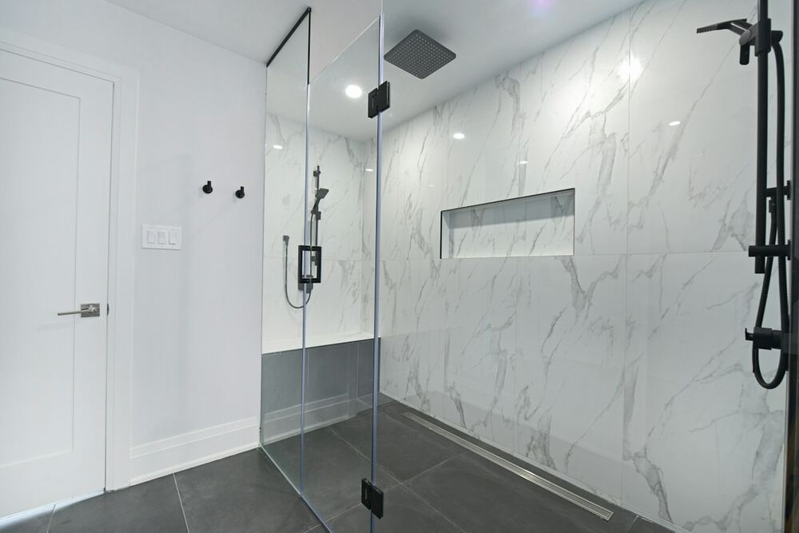
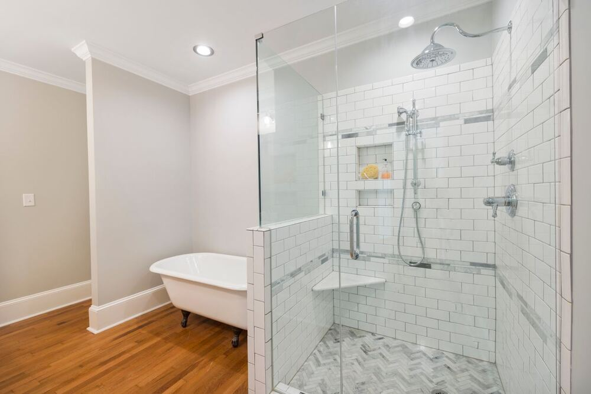
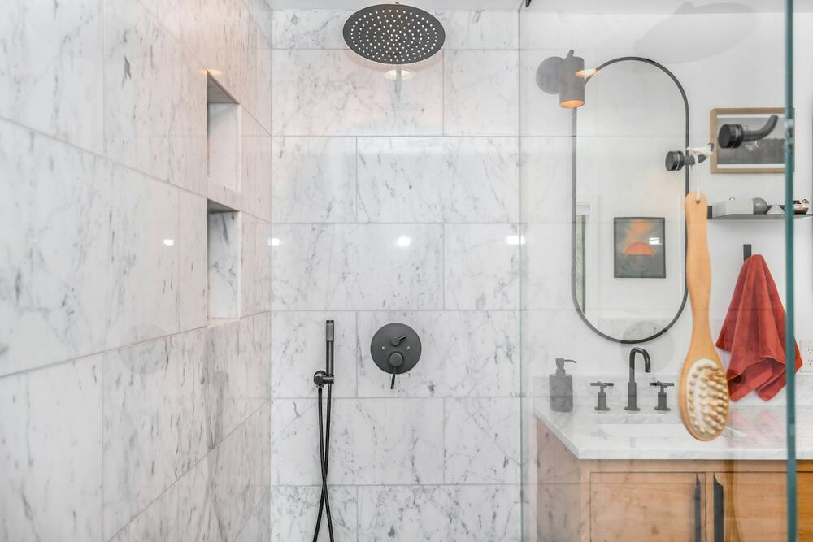
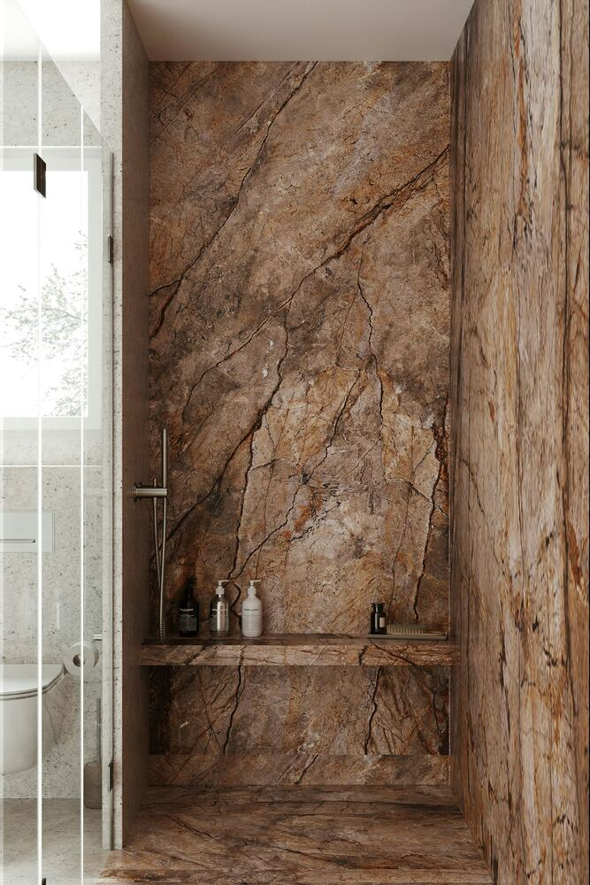

Puertas de Ducha Brownsville TX: Vidrio Sin Marco a la Medida
¿Quiere renovar su baño en Brownsville y lograr el look limpio y abierto del vidrio sin marco? Frameless Shower Doors Brownsville conecta a los dueños de casa de Brownsville con instaladores locales verificados que miden, fabrican e instalan puertas de ducha de vidrio templado hechas a la medida de su regadera, no un kit genérico. La mayoría de las instalaciones sin marco cuestan entre $900 y $3,000, y toda cotización a través de este sitio es gratis.
Puertas de Ducha y Canceles de Baño que Cotizamos en Brownsville
Las puertas de ducha sin marco son de vidrio templado grueso (3/8" o 1/2") sujeto con herrajes mínimos, sin riel ni marco de metal. El vidrio se corta a las medidas exactas de su regadera, algo que importa en las casas viejas de Brownsville donde nada está a plomo ni a escuadra. Estas son las opciones que puede pedir:
Puertas de ducha sin marco
Una puerta de vidrio grueso en una abertura estándar. La forma más rápida de renovar una regadera que todavía funciona.
Puertas corredizas
Para baños donde una puerta abatible no cabe. Pídala en su cotización y le explicamos las opciones disponibles para su espacio.
Canceles de baño completos
Vidrio en todos los lados para casas nuevas y remodelaciones completas, hechos a sus medidas.
Reemplazo de puertas viejas
Cambie rieles oxidados y marcos corroídos por vidrio sin marco que resiste la humedad del Valle.
Vidrio a la medida
Cortes, ángulos y paredes chuecas: cada pieza se mide y se fabrica para su trabajo, no sale de un estante.
Casas de playa y rentas
Condominios en South Padre Island y propiedades de renta, con vidrio que aguanta el aire salado y el uso diario.
¿Cuánto Cuestan las Puertas de Ducha en Brownsville?
Rangos honestos para instalaciones en el sur de Texas:
| Configuración | Costo típico instalado |
|---|---|
| Una puerta sin marco (abertura estándar) | $900–$1,800 |
| Puerta sin marco + panel fijo | $1,200–$2,800 |
| Cancel completo sin marco / a la medida | $2,000–$5,000+ |
| Puerta con marco (para comparar) | $400–$1,100 |
El vidrio sin marco cuesta entre 2 y 3 veces más que uno con marco. Lo que paga: vidrio más grueso, medición y fabricación precisas, y herrajes que no se pudren con la humedad del Valle. Son rangos de referencia; el precio final depende de las medidas de su regadera, el grosor del vidrio y el acabado de los herrajes, y lo confirma el instalador después de la medición en su casa.
Ideas y Estilos de Puertas de Ducha
Fotos de referencia para que vea qué se puede lograr con vidrio sin marco, desde puertas de bisagra hasta canceles con panel fijo.




Son fotos de referencia de bancos de imágenes libres de derechos (Unsplash y Pexels), no trabajos terminados de nuestros instaladores. Solo publicaremos fotos de proyectos reales cuando las tengamos.
Por Qué Confiar en Nosotros
Gratis, siempre
Cada solicitud es gratis y sin compromiso. Si el precio no le conviene, no pierde nada.
Solo instaladores locales
Su trabajo va a profesionales que trabajan en Brownsville, el condado de Cameron y el Valle. Conocen las casas y el agua de la zona.
Su información no se revende
Sus datos van a un instalador verificado, no a una docena de empresas que lo llamen sin parar.
Respuesta rápida
La mayoría de las solicitudes recibe respuesta en un día hábil.
Solo publicamos opiniones de clientes reales y verificados. Cuando las tengamos, las verá aquí.
Obtenga Su Cotización Gratis de Puerta de Ducha
Cuéntenos sobre su regadera y un instalador verificado de Brownsville le dará un precio real por vidrio cortado a su medida. Gratis, rápido y sin compromiso.
Puertas de Ducha Sin Marco en Brownsville
Vidrio a la medida para baños de Brownsville y el condado de Cameron. Medido, fabricado e instalado por profesionales locales verificados, gratis, rápido y sin compromiso.
Obtener Cotización Gratis →Prefiere leer en inglés: Frameless Shower Doors Brownsville TX